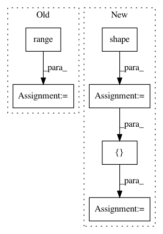

a39084b995d9d6d88300632c54895488985e5cfd,onnx_tf/backend.py,TensorflowBackend,handle_flatten,#Any#Any#Any#,237
Before Change
y_direction = 1;
for i in range(axis):
x_direction = x_direction * tensor.shape[i]
for i in range(axis, tensor.shape.length):
y_direction = y_direction * tensor.shape[i]
shape = tf.constant([x_direction, y_direction])
return [tf.reshape(tensor, shape)]
@classmethod
After Change
def handle_flatten(cls, node, input_dict):
tensor = input_dict[node.inputs[0]]
axis = node.attrs["axis"] if "axis" in node.attrs.keys() else 1
shape = tf.shape(tensor)
split0, split1 = tf.split(shape, [axis, tf.size(shape) - axis])
split0 = tf.reduce_prod(split0)
split1 = tf.reduce_prod(split1)
output_shape = tf.stack([split0, split1])
return [tf.reshape(tensor, output_shape)]
In pattern: SUPERPATTERN
Frequency: 4
Non-data size: 6
Instances
Project Name: onnx/onnx-tensorflow
Commit Name: a39084b995d9d6d88300632c54895488985e5cfd
Time: 2017-10-24
Author: gbercea@gheorghodorsmbp.watson.ibm.com
File Name: onnx_tf/backend.py
Class Name: TensorflowBackend
Method Name: handle_flatten
Project Name: tensorflow/tpu
Commit Name: d7d183281a6c25be0d5556bcec6b54615adb7b34
Time: 2020-06-01
Author: gardener@tensorflow.org
File Name: models/official/detection/serving/inputs.py
Class Name:
Method Name: raw_image_tensor_input
Project Name: google/tf_mesh_renderer
Commit Name: 8aaabd6dfcd2f4ae5618ef08657bbba82e8bd69f
Time: 2019-05-28
Author: david.erler@gmail.com
File Name: mesh_renderer/rasterize_triangles.py
Class Name:
Method Name: rasterize_clip_space
Project Name: tensorflow/tpu
Commit Name: ab6bcc4f147c95d5c7b2336a883be435cff5970a
Time: 2020-07-06
Author: pengchong@google.com
File Name: models/official/detection/serving/inputs.py
Class Name:
Method Name: raw_image_tensor_input